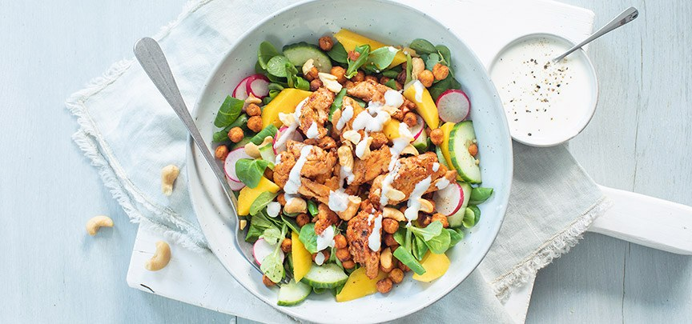
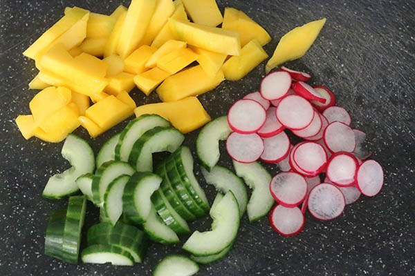

Kip salade
Ingrediënten:
- 。Sla 75 gram
- 。1 bol mozzarella
- 。Handje pijnboompitten (geroosterd)
- 。verse basilicum
- 。1 klein blikje mais
- 。500gram gesneden kipstukjes
Dressing:
- 。3 eetlepels olijfolie
- 。1 eetlepel honing
- 。peper en zout
- 。1 eetlepel wijnazijn

